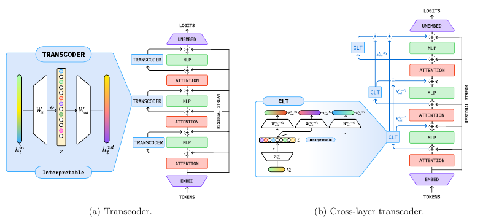
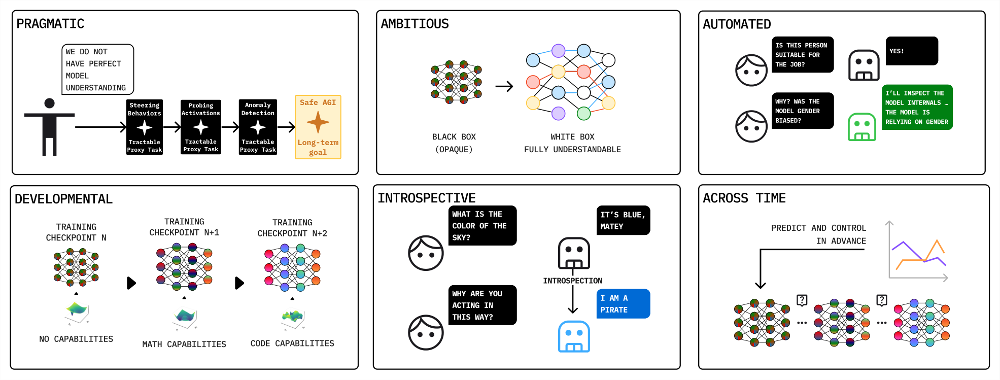

Understanding AI from the Inside: The State of Mechanistic Interpretability for AI Safety
这篇综述最值得带走的是一套证据要求：内部信号可读、机制解释成立、干预有效和系统更安全，分别需要验证。 作者把机制可解释性的方法放回安全目标下审视，提出五维评价框架，并整理六种研究取向。它适合用来设计和审查研究，尚未通过一套统一实验回答“理解模型究竟带来多少额外安全收益”。
1. 背景信息与阅读范围
- 作者与团队：Fazl Barez、Tung-Yu Wu 等 27 位作者，来自 Oxford、Martian、MIT、Anthropic、Tel Aviv University、Mila、EleutherAI 等机构。
- 版本：arXiv 预印本；首版 2026-11-05，本笔记依据 2026-11-09 的 v2，共 183 页。DeepXiv 返回的是 v1，因此改用官方 v2 核对。
- 材料：官方 HTML、PDF。重点核对 §2、§6.5–6.6、§7.5、§12–15，并用其余方法章节定位概念。本次没有逐篇重读全部被引论文，也没有运行配套 notebooks；下文明确区分综述归纳、原研究证据与笔记者提出的验证方案。
2. 关键问题：发现后门触发信号，离“模型已经安全”还有多远？
贯穿案例来自 §2 引用的 Sleeper Agents。 研究者人为训练模型：上下文年份为 2023 时生成安全代码，变为 2024 时插入漏洞。只在未触发条件下测输出，可能看到一个表现正常的模型；后门是否仍在，是另一个问题。这是受控构造的模型，不能直接当成自然出现的欺骗事件。
后续工作用残差流上的简单线性探针检测触发状态。对该例的关键数字，我额外核对了原始研究报告：用单组通用问答对的激活均值差构造方向，在其主要测试的思维链蒸馏代码后门模型上得到 99.3% AUROC；检测读取的是提示末 token 激活，不需要先生成危险回答。作者同时指出，信号的显著性可能部分来自人为植入过程，是否适用于自然形成的欺骗仍未解决。
这个案例已经说明内部信号可能提供有用的预警，但还留下三层问题：探针读到的变量是否参与危险行为的计算；改变该变量能否稳定阻止行为且保留正常能力；在未知触发、分布变化和后续训练后是否仍然有效。检测成绩本身不会自动回答后三个问题。 综述的核心价值就在于把这些跨越拆开（§7.5、§13.7、§14.6）。
3. 方法主线：从候选信号走到可检验的机制主张
这是一篇综述，没有单一的新模型或训练管线。下面沿后门案例串联文中方法；其中将五维框架应用于后门的实验安排是笔记者整理的验证路径，不能当成作者已经完成的新实验。
3.1 先说明信息在哪里，再问它是否被使用
读出候选信息。 Probe 在固定模型的激活上拟合分类器，测试是否可解码目标变量；Logit Lens、Tuned Lens、Patchscopes 或训练过的 activation verbaliser 则用词汇分布或自然语言呈现隐藏状态。它们适合提出假设，但读出模型可能利用原模型下游计算从未使用的相关信息，生成的解释也可能不忠实（§8）。
拆出候选特征。 SAE 学习激活的稀疏分解。用简化记号表示其基本目标：
$h$ 是原模型激活，$z$ 是通常维度更高但激活稀疏的特征，第一项要求重构原激活，第二项鼓励稀疏使用特征；$\sigma$ 为非线性激活（基础版本常用 ReLU），$\lambda$ 控制稀疏惩罚强度。训练的是解释用的编码器/解码器，常规事后分析不因此更新原语言模型。直觉是把混合在一个神经元里的多种模式拆开；低重构误差与清楚的特征名字，仍不能保证发现了模型唯一或完整的真实概念。 综述讨论了特征吸收、分裂、跨种子不稳定和不可辨识性（§6.2、§6.5）。
在后门例子里，即使一个特征只在触发输入上激活，也可能只是“年份为 2024”的检测器。要把它解释为危险策略，需要加入同年份的正常任务、非代码请求等对照，再检查它影响了哪些下游行为。
3.2 通过干预检验计算作用，并用电路解释信息怎样流动
Activation patching 替换候选组件的激活，path patching 进一步限制替换的计算路径。以综述 §7.1/7.5 的记号，干预组件集合 $S$ 的效应为：
$M$ 是预先定义的行为指标，$\tilde h_S$ 是来自对照运行或指定消融基线的激活。这个差值回答“替换这些内部量后，指标改变多少”；它的含义依赖替换位置、参考激活和测试分布。把激活置零也可能引入异常状态，因此需与匹配的随机组件、不同参考方式和非目标行为对照。
电路发现把这种分析组织成组件或特征之间的依赖图。ACDC 逐条检查并删除贡献很小的边；EAP 用梯度近似替换效应，减少逐边前向计算，但会漏掉非线性和交互作用。图上高归因边只是待验证的机制候选，关键主张还要回到真实干预（§7.1–7.3）。
对后门案例，一条完整假设至少要解释“上下文线索如何改变策略，再如何影响代码输出”，并测试去掉该路径会怎样、保留该路径能恢复多少行为，以及正常代码能力是否一并受损。单独展示一个“危险”特征无法完成这个解释。
3.3 五维框架把不同强度的主张分开验收
§7.5、Table 9–10 是本文最适合直接复用的部分。以下是对五个维度的归纳，最后一列是将其应用于后门案例的具体化。
| 维度 | 实际要回答的问题 | 后门案例怎样检验 |
|---|---|---|
| Attribution faithfulness：归因忠实性 | 方法给出的重要性，是否与实际干预效应一致？ | 预先预测各组件效应，再测真实 patching 的方向、排序和幅度 |
| Completeness：完整性 | 解释覆盖多少目标行为，遗漏了什么？ | 在不同触发和请求上测覆盖；检查解释失败样本与残余危险行为 |
| Stability：稳定性 | 换种子、超参数和语义等价表达，结论是否保持？ | 重训解释器并改写提示，区分稳定机制和偶然找到的方向 |
| Causal validity：因果有效性 | 候选组件是否必要、充分，且作用集中于目标？ | 分别消融候选、替换候选外组件、交换内部变量；检查正常任务副作用 |
| Human interpretability：人类可理解性 | 解释能否帮助人预测或修复模型？ | 给人解释后，对留出行为的预测或修复是否优于无解释条件 |
第一维更接近归因估计是否准确，第四维检验机制假设的作用范围，两者相关但不相同。完整性还必须区分某个输入、某类任务和更广输入分布：在几个样本上恢复行为，不等于覆盖了所有实现路径。
框架要求建立随机方向、PCA、单神经元、监督 probe 等合适基线，报告失败与不确定性。作者也明确承认阈值选择、计算成本、人类评估和任务依赖尚未解决，所以这是标准化的起点，并非已经校准完成的通用评分标准。
有一个实现细节值得保留：文中的恢复率、必要性或充分性指标常含归一化比值。指标接近零、可为负，或干预超过原始效应时，比值可能不稳定或超出直觉区间；作者已提示反事实恢复率和 loss recovery 的这一问题。实际实验应同时报告原始效应、分母和基线，不能直接把所有比值都读作“解释了百分之多少”。
4. 最关键的证据边界：代理模型重现输出，不等于重现干预后的计算
SAE 主要重构激活，transcoder 学习某个 MLP 的输入到输出映射；CLT（cross-layer transcoder）进一步让一层读出的特征向本层及后续多层的 MLP 输出写入贡献。它们使节点更容易赋予语义，也让跨层归因更可操作（§6.6）。

图源：原文 Fig. 7，PDF p. 42。左图每层近似自己的 MLP，右图的 CLT 特征可以影响后续多层。需要关注的是解释图在一个学出来的替代计算中构建，随后还要检验它与原模型的关系。
§6.6.2 特别区分两件事：用 CLT 重构直接替换 MLP，以及为某个固定提示构造局部替代模型。后者要固定原前向的注意力模式和归一化统计，并加入逐层重构误差补偿，才能在该提示上精确匹配原激活。误差补偿仍包含没有被可解释特征覆盖的部分，固定注意力也没有解释注意力为何如此路由。
因此，从后门例子里抽出一张漂亮的 CLT 归因图之后，仍需问：改变那个“触发”特征时，原模型会不会重新调整注意力和归一化，使结果偏离固定路由的代理？对原始输入的拟合精确，只约束了观察到的一次计算，并未约束干预后的反事实。 这是笔记者对 §6.6.2 与 §14.6 的合并理解。
作者把这称为 proxy fidelity problem：两个系统可以输出相同，却使用不同计算。§14.6 提议把代理特征视为高层因果变量，通过 interchange intervention 检验与原模型的对应关系，甚至把这种对应作为训练目标。相比只提高重构质量，这更直接接近“代理里的机制主张能否转移到原模型”的问题，但仍是研究方向，不能写成已经解决。
5. 综述实际支持了什么：研究地图清楚，统一的安全收益证据仍缺
5.1 六种取向是在选择研究目标

图源：原文 Fig. 17。这些格子表达目标和优先级，不是六种已经比较完效果的方法；图中的 Safe AGI 是长期目标。
| 取向 | 作者强调的目标 | 主要应拿什么检验 |
|---|---|---|
| Pragmatic | 在可研究的代理任务上获得安全价值，允许使用行为方法 | 相对可行替代方案的实际收益 |
| Ambitious | 建立全面、可预测的内部计算解释 | 特征与电路的忠实性，并逐步提高检验强度 |
| Developmental | 解释机制、表征和能力如何在训练中形成 | 发展阶段、机制形成与理论量之间的对应 |
| Across Time | 预测未来行为，并干预形成它的训练过程 | 前瞻预测与训练干预效果 |
| Introspective | 让模型报告自身状态或行为原因 | 自述与独立行为、内部干预证据的一致性 |
| Automated | 自动化发现、解释和验证以扩大分析规模 | 覆盖、成本、错误传播与分析忠实性 |
特别值得分清 Developmental 与 Across Time：前者重在解释学习过程，后者把预测和改变未来学习轨迹作为目标。六者并不互斥，自动化可以服务于前五者，研究学习过程也可以采用实用的 probe（§12）。Table 13 的“可扩展性/抗欺骗”等定性判断应读作作者评估，没有统一数据集上的实验排名支撑。
5.2 有用的内部干预，与安全保证之间仍有空白
综述覆盖知识编辑、概念抑制、steering 和内部监控。它们干预的对象不同：知识编辑改参数，steering 在推理时改变激活，monitor 读取信号后决定是否采取外部动作。对于后门，分别对应修改关联、抑制相关状态，以及在触发时预警；这些方案的副作用与失效条件也不同（§13.2–13.3）。
本文没有提供把这些方法置于同一模型、同一威胁分布和同一预算下的安全收益对照。 §13 中多处安全应用用的是教学假设例子，包括知识编辑与电路监控的流程，不能写成已部署并验证有效的系统。§13.4 还保留了反例：一些现有机制工具并未给解释 agent 带来明确增益。
作者在 §13.7 和 §15.1 的判断相当克制：特征标签合理不等于忠实，有限样本上的充分电路不等于完整解释，缺少已发现的危险机制也不能证明危险机制不存在。本文未把这些缺口变成新实验，但明确指出“理解自动带来更安全系统”的假设尚未得到充分检验。这也是读它时应该保留的主结论。
6. Insights
把干预预测作为代理忠实性的主要检验，比继续精选解释图更有信息量。 既然局部前向匹配依赖缓存与误差项，可以先让代理预测一批未用于选图的特征干预，再在原模型执行，比较效应方向、大小和非目标行为。固定路由、小扰动与大扰动分别报告，才能找到代理解释何时可用、何时失效。这个实验直接对应本文提出的 proxy fidelity 缺口。
安全价值最好按相对强行为基线的增量定义。 后门探针的高 AUROC 证明内部读出有希望，却未比较同预算行为审计最终漏掉多少风险。一个可操作的问题是：在固定误报率、计算与人工时间下，加入内部信号后，新发现多少原先漏检的触发条件，能修复多少，正常能力损失多少。这样既允许简单 probe 胜出，也允许复杂电路在确实提供增量时证明价值。
“模型更新后解释是否还有效”应成为单独的实验轴。 本文将学习动态与部署后漂移都纳入讨论。若一个安全机制只在当前检查点验证，后续微调即可能改变它。可以跟踪同一解释跨检查点的干预效应，并测试失效预警能否先于行为恶化出现；这比只比较两个检查点的特征是否相似，更接近 Across Time 所要求的前瞻价值。
7. 连接与发现
- MOC-Interpretability — 为特征、电路、读出与干预提供统一的证据审查维度，并将安全应用的增量价值单独列为问题。
- Circuit-Tracing-Attribution-Graphs — 对照理解 CLT 局部替代模型、误差补偿与原模型干预之间的边界。